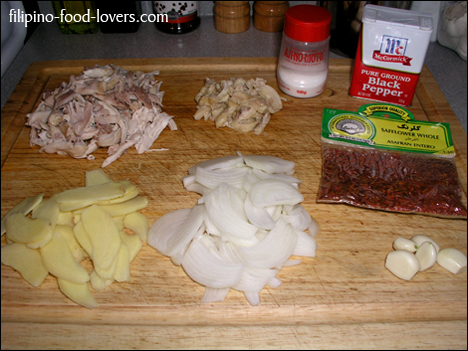
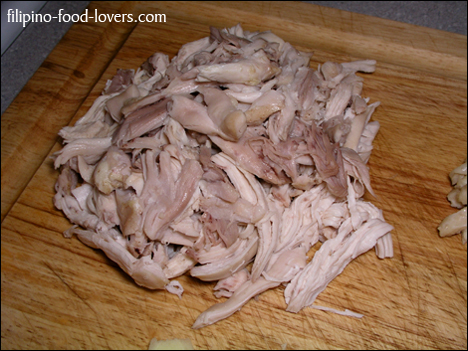
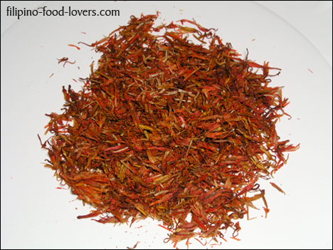
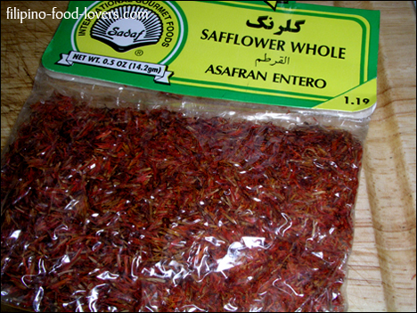
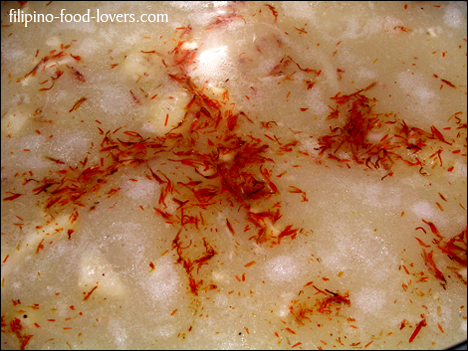
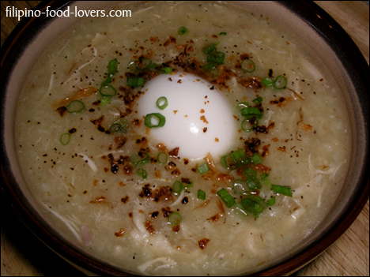

Arroz Caldo or Lugaw
Well, fall season is here in America and winter is just around the corner.
Having said that for most of us Filipinos here in the U.S. or abroad our bodies are starting to look for something warm to eat to compensate for the cold weather outside.
So, of course, what is better to have than a hot bowl of Arroz Caldo.
But before we head to the kitchen let’s dig a little bit deeper about this classic dish.
Lugaw is the Filipino version of congee.
It is very similar to Cantonese style congee, however, lugaw is typically a thicker consistency, retaining the shape of the rice while achieving the same type of texture.
It is boiled with fresh ginger.
A lot of times it is topped with scallions and served with crispy, fried garlic.
Chicken stock is also used to flavor the soup.
In the Philippines they also serve tokwat baboy, (diced tofu and pork) as well as calamansi, and fish sauce.
This is often served at the street side eateries commonly known as turo-turo restaurants.
This is also very popular among Filipinos living abroad in colder weather because it is warm, soft, and easily digestible.
Now we know how they came up with this soup, so let’s head to the kitchen and cook some Arroz Caldo.
For the stock:
- 1 Whole chicken cut-up into smaller pieces
- 6 Quarts of water
- 1 Onion peeled and thinly sliced
- 1 Tsp. MSG
- 1 Tbs. Salt
For the rice:
- 1½ Cup of long grain rice (jasmine rice)
- 9 Cups of water
For the soup:
- 1 Large ginger peeled and sliced thinly
- 5 Cloves of garlic peeled and smashed
- 10 Cups of chicken stock
- 1½ Tbs. Safflower
- ½ Tbs. Ground black pepper
- ½ Tbs. MSG3 Tbs. Patis (fish sauce)
- 1 Tbs. SaltHard-boiled eggs*
- Fried smashed garlic*
Directions:
Prepare the chicken and the stock;
Rinse the chicken very thoroughly and cut it all up into smaller pieces,
with the exception of the two breast halves.
- Place chicken cut-up into an 8 quart stock pot with 5 to 6 quarts of water.
- Bring water to a boil and remove scum as it rises.Next add the onions and salt. Cover and let it simmer for 1 hour.
- After an hour turn heat off and remove the meat from the pot.
- Place meat on a tray and let it cool off. In a large bowl, using a strainer, pour the stock and strain all the solids that are in the stock.
- Next discard the solids removed from the stock and set the stock aside.
- When chicken is finally cooled off locate one of the breast halves and one chicken thigh, de-bone, and discard the bones.
- Remove the meat from the bone by shredding the meat from the bone and saving the skin.
- Slice chicken skin into small strips and set aside.
- As for the rest of the chicken carcasses, place them in zip lock bags and freeze them to save for later cooking.
The Soup:
- Using the same 8-quart stockpot heat 3 Tbs. of corn oil and saute garlic until golden brown.
- Next add onions and cook until they hit the shiny stage.
- Then add ginger, chicken meat, chicken skins, black pepper, msg, and fish sauce (patis) and let it cook for 3 minutes.
- Add the rice.
- While stirring constantly, let it cook for 2 minutes.
- If the rice has thickened add 2 cups of chicken stock and mix it well.
- Make sure all the lumps are smooth before adding rice to the pot.
- After the 2 minutes add 10 to 12 cups of chicken stock into the pot depending on how thick you want your Arroz Caldo.
- Bring it back to a simmer while mixing it constantly.
- As soon it starts to simmer add the salt, safflower, keep stirring and let it cook over medium low heat for 10 minutes while stirring constantly.
- Finally adjust the taste by adding more salt & pepper if needed.
- Serve hot with hard-boiled eggs and topped with green onion (scallions) and fried smashed garlic.
- Drizzle it with fish sauce and calamansi. Enjoy your mouth-watering Arroz Caldo!
The Hard-Boiled Eggs:*
- In a pot add 1½ cups of rice and add 9 cups of water.
- Bring to a boil, lower the heat to medium low, and let it simmer for 45 minutes un-covered.
- Stir the rice frequently to avoid scorching. Set aside.
For the Fried Garlic:*
- Add eggs into a small pot and cover with water until it’s about half an inch from the top of the eggs.
- Boil for 15 minutes (10 minutes for soft boiled).
- This might sound silly, but you’d be surprised how many people don’t know how to properly cook hard-boiled eggs.
- People say that you should just leave it boiling long enough for it to cook.
- That is somewhat true, but the problem is if you leave it cooking too long you will have a hard time de-shelling the eggs as the membrane between the eggs and the shell will act like glue.
- You will wind up with pretty torn up eggs.
Note 1:
I use safflower for this dish to give it a yellowish hue. That gives it the look you expect from this rice soup.
Note 2:
When making arroz caldo you have to remember that the stock is what gives this soup it’s good flavor.
It is very important to have a very good quality stock.
If at all possible make your own stock by using a whole chicken to give it the maximum chicken flavor.
Avoid using chicken bouillon or cheap low quality canned chicken stock.





